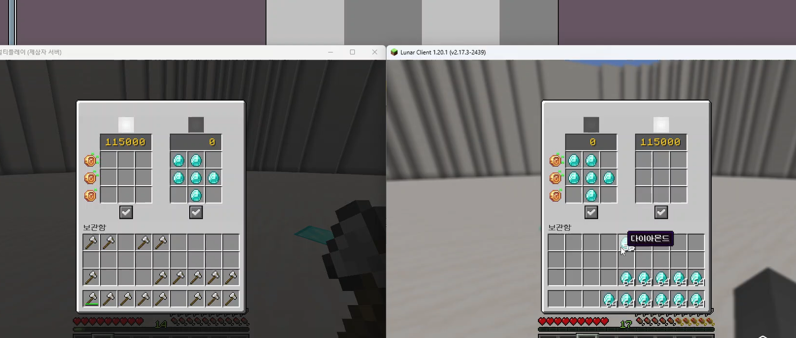

소셜 시스템
개발
플레이어 간 다양한 상호작용 추가 플러그인
소셜 시스템
개발
제작 기간: 2024.10.06 ~ 2024.10.19
제작 환경: 1.20.1
플레이어 간 여러 상호작용(파티, 친구 추가, 거래) 기능을 추가합니다.제작 기간: 2024.10.06 ~ 2024.10.19
제작 환경: 1.20.1
▲ 파티 시스템 (BetterHUD 연동)
▲ 교환 시스템